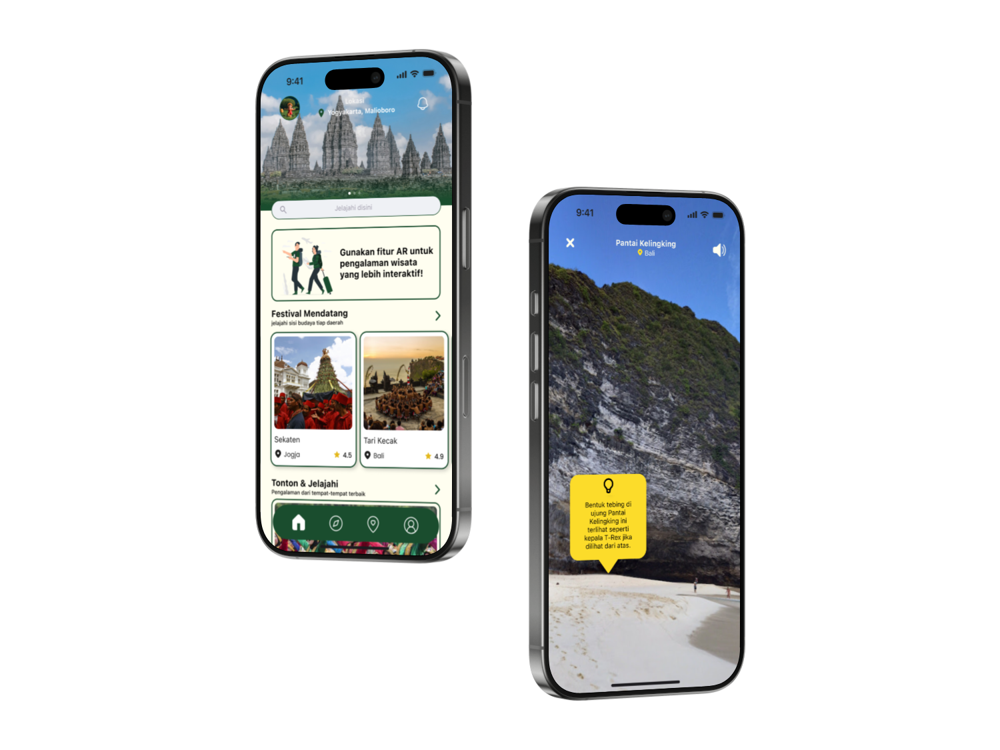
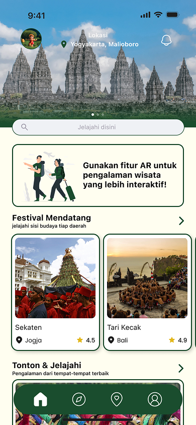
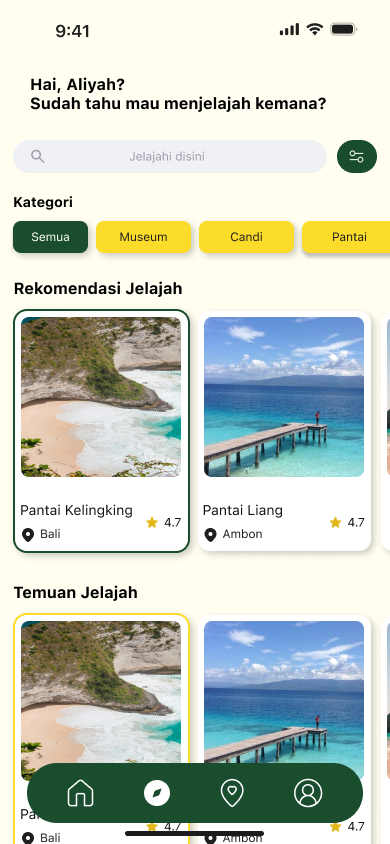
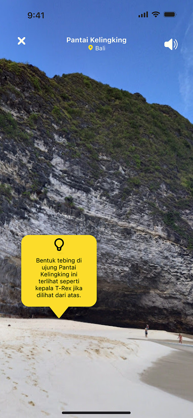
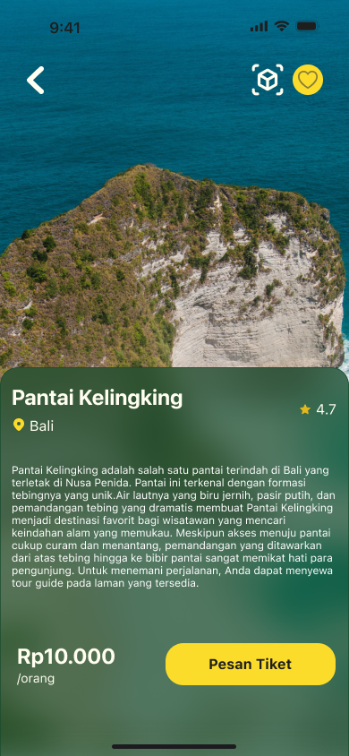
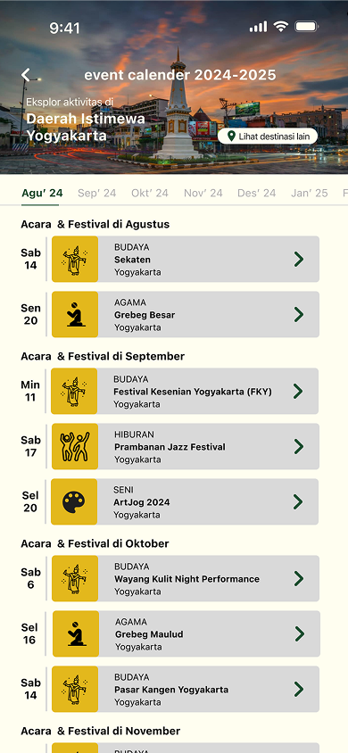
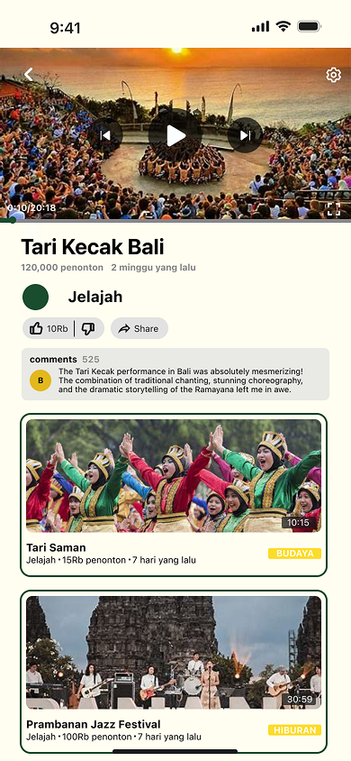
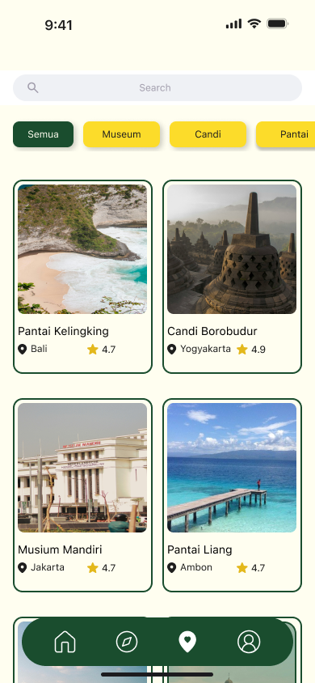
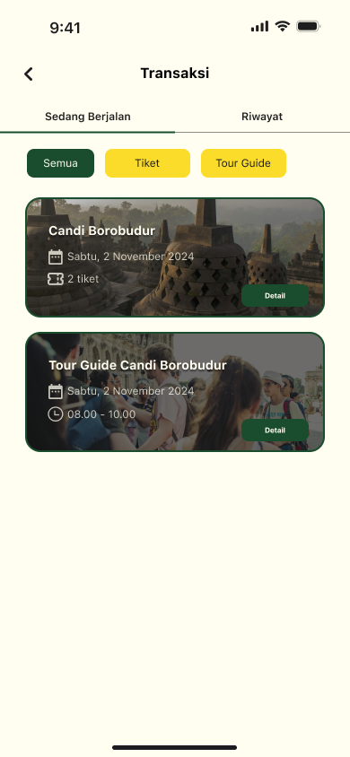

Jelajah
A tourism app where people can explore local places and view destinations in AR.
- Role
- UI/UX Designer
- Timeline
- November 2024
- Stack
- Figma · Canva
- Outcome
- Top 5 finalist, Technotainment 2024

About the project
Jelajah is a local tourism app that brings destination information, ticket purchase, and tour guide booking into one place. Travelers can browse places by province or city and check upcoming events. For history and culture spots, the AR feature with audio narration helps them learn the story behind a place while they are there. We designed it for tourists, culture lovers, and anyone who wants to find lesser-known places in Indonesia without checking many different websites.
The challenge
The hardest part was fitting a lot of needs into one app without making it confusing. From our interviews, users wanted complete and accurate information, faster ticket buying, and a more interesting way to learn about a place. Each of these needed its own feature, so we had to decide how they would fit together in the navigation and the main flows. We also had to design around limits like AR device support, internet access at tourist sites, and tour guide availability.
How we worked
We used the Design Thinking methodology to guide the design process, focusing on understanding user needs, defining key problems, exploring solutions, and evaluating the proposed design. The process consisted of five stages:
- Empathize. We interviewed the related stakeholders to understand their needs and pain points. We summarized the results in an empathy map.
- Define. We developed a user persona and formulated four How Might We (HMW) questions supported by Point of View (POV) statements. These helped us identify four key focus areas: providing complete and accurate information, simplifying ticket purchases, reaching more travelers, and enhancing the experience through augmented reality (AR).
- Ideate. We developed the information architecture and task flows for key user journeys, including sign up, sign in, and the main feature flow.
- Prototype. We created a style guide covering the color palette, typography, icons, buttons, interactive elements, and logo. We then translated these elements into wireframes and high-fidelity mockups.
- Test. We conducted manual testing to evaluate the prototype's performance, stability, and core functionality, ensuring that the main features worked as intended.
What we designed
- Homepage: The main page of the app. It has a shortcut to try the AR feature, a list of upcoming cultural events, recommended places, and a watchlist of culture videos.
- Explore: A list of destinations that users can browse by category and sort by province or city.
- Augmented Reality (AR): Shows information about a place through the phone camera. Audio narration explains the history and culture of the place, and it can be turned on or off.
- Place details: Shows the full information about a destination, including photos, description, and ticket price. Users can book tickets and a tour guide directly from this page.
- Event calendar: Shows upcoming cultural events and festivals for the city the user selects, so travelers can plan their trip around them.
- Culture video details: Shows the details of a culture video from the watchlist, so users can learn about local traditions and events before they visit.
- Favorite places: Collects every destination the user has saved. Users can filter the list by category to find a place quickly.
- Transaction: Keeps a record of all ticket and tour guide orders, including ongoing and completed ones, with ticket details and a QR code.








Outcome
Jelajah was selected as a top 5 finalist at Technotainment 2024, a national competition held by Universitas Trunojoyo Madura, where we competed against 38 teams from 18 universities.
You can view the prototype here ↗ and read the full proposal ↗.
What's next
Let’s work together.
I’m open to UI/UX design roles and collaborations. Let’s talk about how I can contribute.